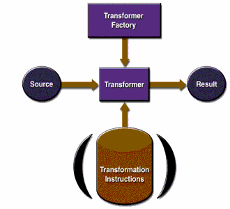

La siguiente Figura muestra las IPAs de XSLT en acción.

Un objeto TransformerFactory se instancia y usa para crear un Transformer. El objeto
fuente es la entrada al proceso de transformación. Un objeto fuente se puede crear desde un reader de SAX,
desde un DOM, o desde un flujo de entrada.
Del mismo modo, el objeto resultado es el resultado del proceso de transformación. Ese objeto puede ser un manejado de eventos SAX, un DOM, o un flujo de salida.
Cuando se crea el transformer, puede ser creado desde un conjunto de instrucciones de transformación, en cuyo caso se llevan a cabo las transformaciones especificadas. Si es creado sin ninguna instrucción específica, entonces el objeto transformer simplemente copia la fuente en el resultado.
Las IPAs de XSLT se definen en los paquetes mostrados en la Tabla .
|
Paquete |
Descripción |
|---|---|
|
|
Define las clases |
|
|
Clases para crear los objetos de entrada (fuente) y salida (resultado) desde un DOM. |
|
|
Clases para crear objetos de entrada (fuente) desde un analizador SAX y objetos de salida (resultado) desde un manejador de eventos SAX. |
|
|
Clases para crear objetos de entrada (fuente) y objetos de salida (resultado) dede un flujo de E/S. |